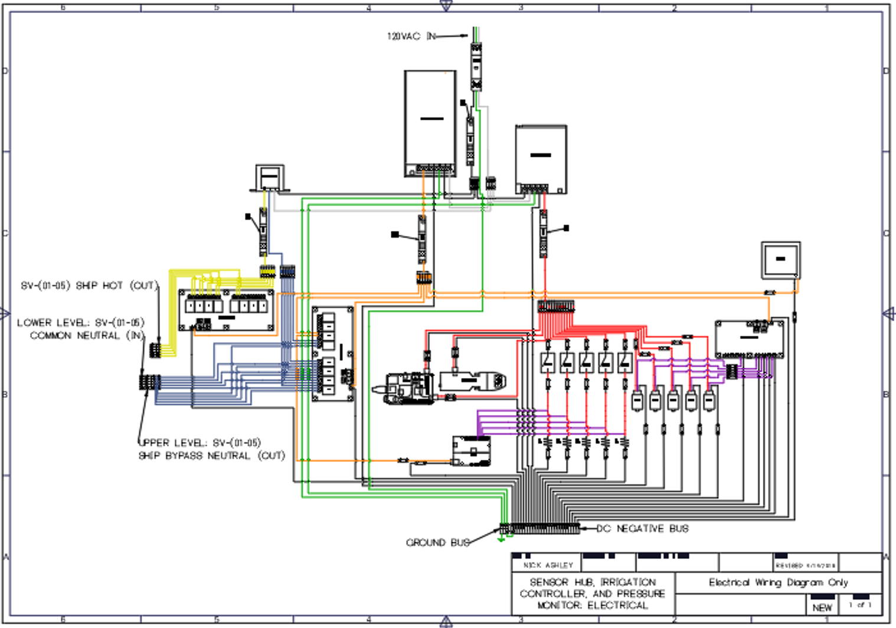
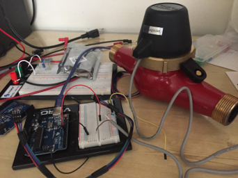
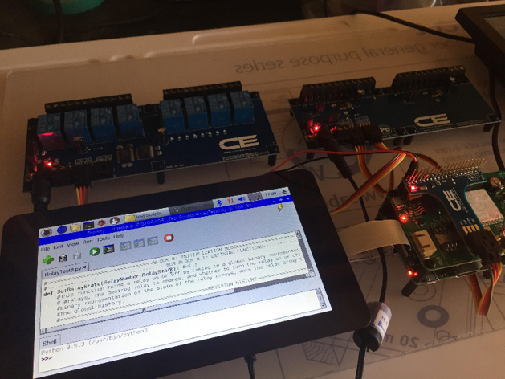

Summary:
Used Systems Engineering fundamentals to develop a Raspberry Pi-based control system to automate the irrigation of guayule fields for the $15M+ Sustainable Bioeconomy in Arid Regions (SBAR) research project. Coordinated with university and USDA researchers to define design criteria and created software scripts, an electrical wiring diagram, and a functioning prototype.

This system distributes 120VAC power into three regulated outputs—24VAC, 12VDC, and 5VDC—to support a range of automation and sensing components, with surge and circuit protection at every stage. Incoming 120VAC is routed through a Class III surge protector, with the hot wire protected by a 2A breaker before branching to three power supplies: a 24VAC transformer, a 12VDC supply, and a 5VDC supply. Each supply has its own surge breaker (0.5A, 10A, and 8A respectively) and feeds into dedicated distribution blocks.
The 5VDC system powers 13 devices, including a Raspberry Pi, GSM shield, Bluetooth transmitter, 5 flow meters, and 5 pressure transducers. The 12VDC system powers the UC32 pulse counter, a 0–10V ADC board, two 8-channel relay boards, and an 8" display monitor via a barrel jack. The 24VAC system operates only the irrigation solenoid valves and is isolated from ground for safety.
Relay boards manage power routing and control. Relay Control Board #1 selectively routes valve neutral lines either to ground (for SHIP bypass) or to the internal system. Relay Control Board #2 toggles 24VAC hot lines to the valves, enabling irrigation control when relays on Board #1 permit it.
Flow meters connect through terminal blocks and feed digital pulses to the UC32, while pressure transducers send analog voltage signals to the ADC. Pull-down resistors tied to the DC Negative Bus ensure clean logic levels and accurate readings.
All DC negative and ground wires route to a shared Ground Bus, bonded to the enclosure for safety. If a hot wire contacts the enclosure, a low-resistance short trips a breaker instantly, protecting users and equipment.

Field Valves: This is the actual set of Netafim irrigation valves that the system was designed to control.
Pulse Counter: A breadboarded Arduino pulse counter setup used to measure flow rates from low-cost Netafim analog flow meters. Successfully reduced expected cost from over $400 to ~$35 for a 5-channel setup.
Testbed: Photo of the Raspberry Pi-based testbed system with connected relay boards, shields, and touchscreen. Python scripts were used to control valve states and verify component functionality.